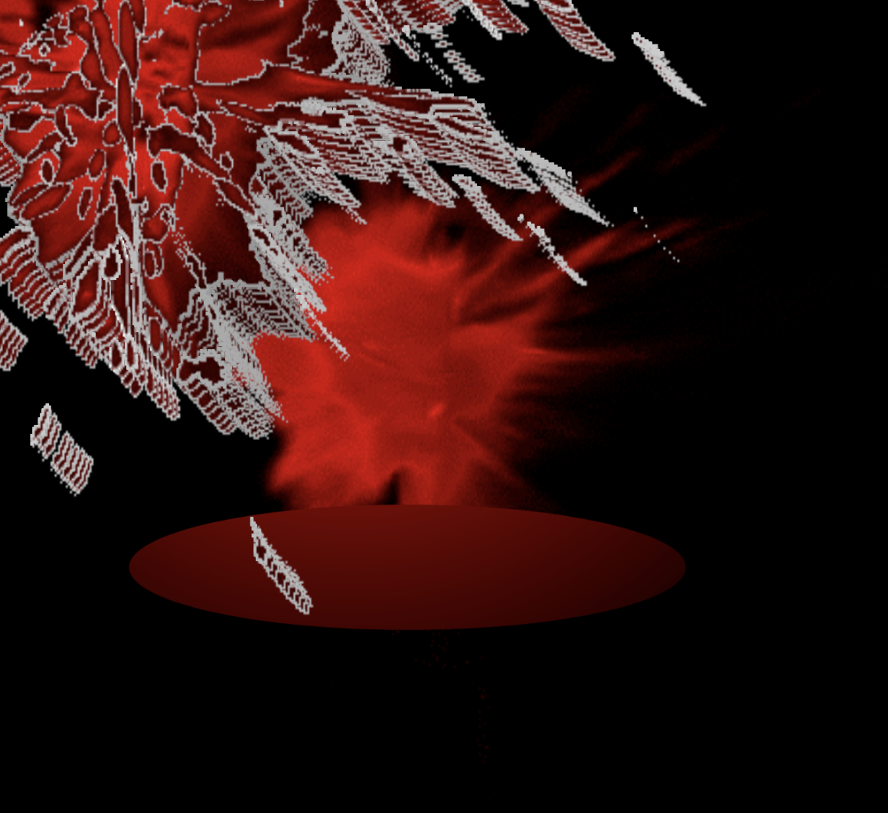
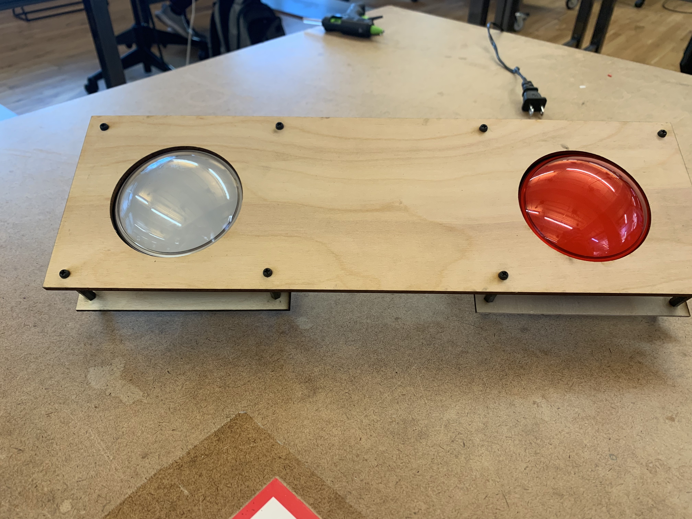

First, wear it! Hand tweaking of this device Penig controls the "X,Y" cordination parametters of a visaul input, could be an image, a gif, etc. In the exmaple I will show below, I am using a spatting blood gif.
In certain developped country, such as China, there is still a uneqaul impressions towards different genders. Women are viewed born inferior than men. And after an intense conversation with my father and his friends about such matter, I wanted to create a device that gives me relief of such pressure and judgements, what's more, elevate my mental wellfare through humor that could perhaps never otherwise make sense.

1.created the blood gif into p5js
2.put buttons to trigger the gif
3.adding a joystick as the "Penig"
4.cleanning up the circuits

